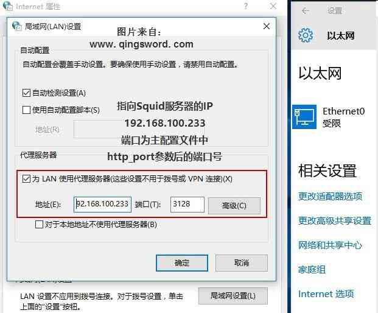

[RHEL]-24-代理缓存服务Squid
引言
这篇文章将介绍如何使用Squid来部署代理缓存服务。
文章目录
0×1.正向代理模式
Squid服务是一款在Linux系统中的高性能代理服务软件，一般被部署在网关服务器上，用于接收用户的访问请求，根据请求去下载对应数据（网页等静态资源），缓存在服务器上，当再有用户请求相同数据时，直接取出已经缓存在服务器上的数据返回给用户，减少了用户的访问延迟。
Squid服务有三种模式：
标准的正向代理——需要用户配置浏览器代理，指向缓存网关服务器，在这种模式下能够配置访问控制（ACL），用于控制和筛选用户流量（比如不允许访问哪些网站等）；
透明的正向代理——不需要用户配置浏览器代理，只需要将用户机器默认网关指向Squid服务器，即可完成所有流量的代理（网页，应用等，全局代理）；
反向代理——这种模式一般是将网络中的某台服务器中的网页数据缓存到本地Squid服务器上，这样，只需要访问Squid服务器的IP地址，就能够访问到对应网络中那台服务器上的网页内容了；
实验环境：
Squid服务端，RHEL7系统，双网卡，对内IP 192.168.100.233/24，对外IP 192.168.1.233/24，网关192.168.1.1（注意，对内网卡配置不要设置网关，否则会和对外的网卡冲突导致不能上网）；
客户端Windows10系统，IP 192.168.100.23/24，在标准正向代理实验中无需设置网关与DNS，在透明正向代理模式下需要将网关指向192.168.100.233，DNS指向114.114.114.114；
基于上面的实验环境，开始下面的实验。
a.标准正向代理
Squid的正向代理十分简单，只需要在服务器上安装好Squid：
#1.安装squid [root@qingsword.com ~]# yum -y install squid #主配置文件位置 [root@qingsword.com ~]# vim /etc/squid/squid.conf #在这个文件中，有一个Squid服务默认监听端口号3128，为了防止端口扫描来判断服务器上是否安装了这个服务，可以将这个端口自定义成另外的端口号（2000以上的端口号），本例不修改保持默认 # Squid normally listens to port 3128 http_port 3128 #如果更改端口后selinux阻止了新的端口，可以使用下面的方法将新端口号添加到selinux配置中（在RHEL7中更改squid默认服务端口selinux并不会阻止，所以也不需要下面的添加操作） #查看squid在selinux下指定的端口号列表 [root@qingsword.com ~]# semanage port -l | grep squid squid_port_t tcp 3128, 3401, 4827 squid_port_t udp 3401, 4827 #假如我们更改了一个新的端口2333，将这个端口添加到列表中 [root@qingsword.com ~]# semanage port -a -t squid_port_t -p tcp 2333 #2.重启服务，并且设置成开机自启动 [root@qingsword.com ~]# systemctl restart squid [root@qingsword.com ~]# systemctl enable squid #3.RHEL7上的iptables防火墙，可以添加允许连接3128的入站规则，或者直接清空防火墙规则并保存 [root@qingsword.com ~]# iptables -F [root@qingsword.com ~]# service iptables save
客户端按照实验环境中的IP配置，设置好IP后，确保能够ping通192.168.100.233，然后配置浏览器代理指向服务器3128端口即可：
确定后配置就完成了，现在Windows客户端可以通过Squid服务端来上网，所有页面流量要先通过服务端缓存转发，大家可以尝试着浏览几个网站，然后看看Squid的日志文件是否正确的记录了客户端访问的页面。
Squid服务几个重要的文件位置：
主服务程序 /usr/sbin/squid；
配置文件目录 /etc/squid；
主配置文件 /etc/squid/squid.conf；
访问日志文件 /var/log/squid/access.log（内网中每个IP访问的网站记录都记载在这个文件中）；
缓存日志文件 /var/log/squid/cache.log；
Squid主配置文件常用配置参数：
http_port 3128 监听的端口号；
cache_mem 64M 内存缓冲区的大小；
cache_dir ufs /var/spool/squid 2000 16 256 硬盘缓冲区的大小；
cache_effective_user squid 设置缓存的有效用户；
cache_effective_group squid 设置缓存的有效用户组；
dns_nameservers IP地址 DNS地址；
cache_access_log /var/log/squid/access.log 访问日志文件的保存路径；
cache_log /var/log/squid/cache.log 缓存日志文件的保存路径；
visible_hostname qingsword.com 设置Squid服务主机的名称；
b.代理ACL配置
在正向代理模式下，可以通过修改squid主配置文件来限制用户能够访问哪些内容，接着上面的实验，来看几个实例：
实例一：限制用户访问url中包含某些关键词的网站
[root@qingsword.com ~]# vim /etc/squid/squid.conf acl Safe_ports port 777 # multiling http acl CONNECT method CONNECT #在大约25行左右，上面这一串acl规则的下方，添加一条新的acl，deny_keywords是这条规则自定义的名称，url_regex -i后面是url中需要禁止的匹配列表，用空格分隔 acl deny_keywords url_regex -i youku iqiyi bilibili # # Recommended minimum Access Permission configuration: # # Deny requests to certain unsafe ports http_access deny !Safe_ports #阻止访问deny_keywords这条规则中指定的内容，即url中包含youku，iqiyi，bilibili这些关键词的网站访问都会被禁止 http_access deny deny_keywords #保存后，重启squid，在客户端尝试着访问一下包含这些关键词的网站，看看是不是被禁止了？ [root@qingsword.com ~]# systemctl restart squid
实例二：禁止访问单独的某个网站
acl deny_keywords url_regex -i youku iqiyi bilibili #添加两条新的规则，不允许访问晴刃和百度 acl deny_website url_regex www.qingsword.com acl deny_website url_regex www.baidu.com #也可以单独写成一条，网址用空格隔开 # acl deny_website url_regex www.qingsword.com www.baidu.com # # Recommended minimum Access Permission configuration: # # Deny requests to certain unsafe ports http_access deny !Safe_ports http_access deny deny_keywords #不允许访问deny_website规则中列出的网站 http_access deny deny_website #重启squid后 [root@qingsword.com ~]# systemctl restart squid
实例三：阻止特定的文件下载
acl CONNECT method CONNECT acl deny_keywords url_regex -i youku iqiyi bilibili acl deny_website url_regex www.qingsword.com acl deny_website url_regex www.baidu.com #不允许.exe后缀，.rar后缀以及.zip后缀文件的下载，这种阻止操作仅限于浏览器的下载，如果用户使用p2p软件下载，使用squid是很难禁止的 acl deny_file_download urlpath_regex -i \.exe$ \.rar$ \.zip$ # # Recommended minimum Access Permission configuration: # # Deny requests to certain unsafe ports http_access deny !Safe_ports http_access deny deny_keywords http_access deny deny_website #对指定文件的下载阻止操作 http_access deny deny_file_download #重启squid后 [root@qingsword.com ~]# systemctl restart squid
0×2.反向代理模式
反向代理配置十分简单，安装好squid后，修改配置文件：
[root@qingsword ~]# vim /etc/squid/squid.conf #将http_port修改成本地外网IP，端口80 http_port 192.168.1.233:80 vhost #cache_peer后面是对方网站的独立IP地址（不能是CDN地址，只有独立IP的网站才能够使用这种技术访问） cache_peer 233.233.233.233 parent 80 0 originserver #清空防火墙 [root@qingsword ~]# iptables -F [root@qingsword ~]# service iptables save #重启squid [root@qingsword ~]# systemctl restart squid [root@qingsword ~]# systemctl enable squid
现在在squid服务器浏览器中访问本地的192.168.1.233，就能够直接获取233.233.233.233的页面数据，这种反向代理技术十分的鸡贼，开启了这一技术的服务器完全可以自己在本地搭建一个apache服务，直接提供访问，而用户访问的数据全部是抓取233.233.233.233上的。